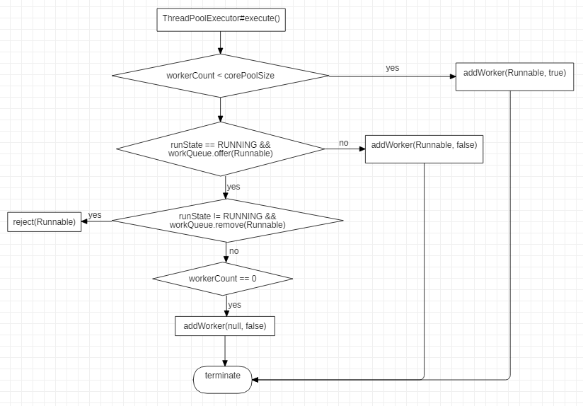
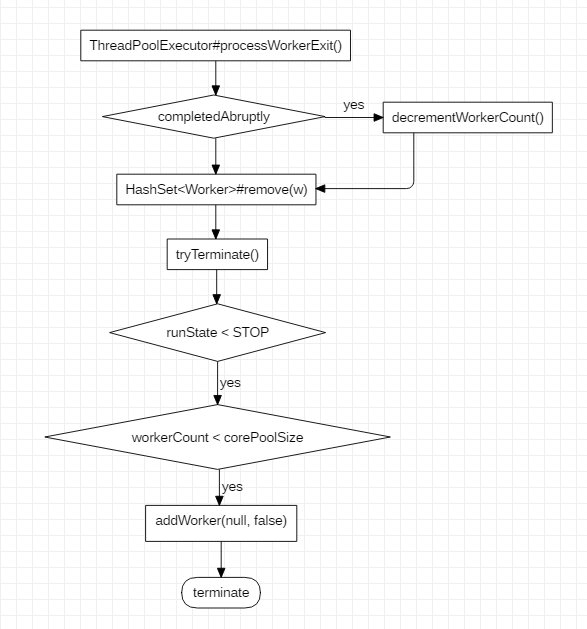

ThreadPoolExecutor私有变量解释
private final AtomicInteger ctl = new AtomicInteger(ctlOf(RUNNING, 0)); |
ctl
对于ctl的解释，源码注释是这么说的：/**
* The main pool control state, ctl, is an atomic integer packing
* two conceptual fields
* workerCount, indicating the effective number of threads
* runState, indicating whether running, shutting down etc
*/
ctl是线程池的主要控制状态，包含了对工作线程数(workerCount)和线程池运行(runState)状态两个字段的控制。
workerCount
/** |
workerCount是被允许开始并且不被允许停止的工作线程数。workerCount有时会与实际的存活线程数存在瞬间的偏差。例如：当向线程池请求创建新的线程时，正在退出的线程在终止之前还在进行退出操作，此时看到的线程数为workerCount，而过一会workerCount会减去刚才正在退出的线程数量。
runState
/** |
runState的四种状态
- RUNNING：运行状态，接受新的任务和处理队列中的任务
- SHUTDOWN：关闭状态，不接受新的任务，但是处理队列中的任务
- STOP：停止状态，不接受新的任务，不处理队列中大任务，终端正在执行的任务
- TIDYING：清理状态，所有任务都已经终止，workerCount为0，状态转变为TIDYING，线程池将执行termiated()钩子方法
- TERMINATED：终止状态，terminated()方法执行完毕
线程池创建参数
int corePoolSize —— 线程池的基本线程数
Core pool size is the minimum number of workers to keep alive (and not allow to time out etc) unless allowCoreThreadTimeOut is set, in which case the minimum is zero.
当提交一个任务到线程池时，线程池会创建一个线程来执行任务，即使其他空闲的基本线程能够执行新任务也会创建线程，等到需要执行的任务数大于线程池基本大小时就不再创建。如果调用了线程池的 prestartAllCoreThreads() 方法，线程池会提前创建并启动所有基本线程。
int maximumPoolSize —— 线程池最大线程数
Maximum pool size. Note that the actual maximum is internally bounded by CAPACITY.
线程池允许创建的最大线程数。如果队列满了，并且已创建的线程数小于最大线程数，则线程池会再创建新的线程执行任务。值得注意的是如果使用了无界的任务队列这个参数就没什么效果。
long keepAliveTime —— 闲置线程活动时间
Timeout in nanoseconds for idle threads waiting for work. Threads use this timeout when there are more than corePoolSize present or if allowCoreThreadTimeOut. Otherwise they wait forever for new work.
线程池的工作线程空闲后保持存活的时间。如果任务很多，并且每个任务执行的时间比较短，可以调大这个参数，提高线程的利用率。
TimeUnit unit —— 闲置线程活动时间单位
NANOSECONDS, MICROSECONDS, MILLISECONDS, SECONDS, MINUTES, HOURS, DAYS
BlockingQueue workQueue —— 任务队列
The queue used for holding tasks and handing off to worker threads. We do not require that workQueue.poll() returning null necessarily means that workQueue.isEmpty(), so rely solely on isEmpty to see if the queue is empty (which we must do for example when deciding whether to transition from SHUTDOWN to TIDYING). This accommodates special-purpose queues such as DelayQueues for which poll() is allowed to return null even if it may later return non-null when delays expire.
用于保存等待执行的任务的阻塞队列，例如：
- ArrayBlockingQueue —— 一个基于数组结构的有界阻塞队列，此队列按 FIFO（先进先出）原则对元素进行排序。
- LinkedBlockingDeque —— 一个基于链表结构的阻塞队列，此队列按 FIFO （先进先出） 排序元素，吞吐量通常要高于 ArrayBlockingQueue。静态工厂方法 Executors.newFixedThreadPool() 使用了这个队列。
- SynchronousQueue —— 一个不存储元素的阻塞队列。每个插入操作必须等到另一个线程调用移除操作，否则插入操作一直处于阻塞状态，吞吐量通常要高于 LinkedBlockingQueue，静态工厂方法 Executors.newCachedThreadPool() 使用了这个队列。
ThreadFactory threadFactory
Factory for new threads. All threads are created using this factory (via method addWorker). All callers must be prepared for addWorker to fail, which may reflect a system or user’s policy limiting the number of threads. Even though it is not treated as an error, failure to create threads may result in new tasks being rejected or existing ones remaining stuck in the queue.
We go further and preserve pool invariants even in the face of errors such as OutOfMemoryError, that might be thrown while trying to create the need to allocate a native stack in Thread.start, and users will want to perform clean pool shutdown to clean up. There will likely be enough memory available for the cleanup code to complete without encountering yet another OutOfMemoryError.
RejectedExecutionHandler handler —— 饱和策略
Handler called when saturated or shutdown in execute.
当队列和线程池都满了，说明线程池处于饱和状态，那么必须采取一种策略处理提交的新任务。这个策略默认情况下是 AbortPolicy，表示无法处理新任务时抛出异常。以下是JDK1.8提供的四种策略：
AbortPolicy
A handler for rejected tasks that throws a RejectedExecutionException.
直接抛出异常CallerRunsPolicy
A handler for rejected tasks that runs the rejected task directly in the calling thread of the execute method, unless the executor has been shut down, in which case the task is discarded.
只用调用者所在线程来运行任务。DiscardPolicy
A handler for rejected tasks that silently discards the rejected task.
不处理，丢弃掉。DiscardOldestPolicy
A handler for rejected tasks that discards the oldest unhandled request and then retries execute, unless the executor is shut down, in which case the task is discarded.
丢弃队列里最近的一个任务，并执行当前任务。
线程池工作流
线程执行过程

ThreadPoolExecutor#execute()/**
* Executes the given task sometime in the future. The task
* may execute in a new thread or in an existing pooled thread.
*
* If the task cannot be submitted for execution, either because this
* executor has been shutdown or because its capacity has been reached,
* the task is handled by the current {@code RejectedExecutionHandler}.
*
* @param command the task to execute
* @throws RejectedExecutionException at discretion of
* {@code RejectedExecutionHandler}, if the task
* cannot be accepted for execution
* @throws NullPointerException if {@code command} is null
*/
public void execute(Runnable command) {
if (command == null)
throw new NullPointerException();
/*
* Proceed in 3 steps:
*
* 1. If fewer than corePoolSize threads are running, try to
* start a new thread with the given command as its first
* task. The call to addWorker atomically checks runState and
* workerCount, and so prevents false alarms that would add
* threads when it shouldn't, by returning false.
*
* 2. If a task can be successfully queued, then we still need
* to double-check whether we should have added a thread
* (because existing ones died since last checking) or that
* the pool shut down since entry into this method. So we
* recheck state and if necessary roll back the enqueuing if
* stopped, or start a new thread if there are none.
*
* 3. If we cannot queue task, then we try to add a new
* thread. If it fails, we know we are shut down or saturated
* and so reject the task.
*/
int c = ctl.get();
if (workerCountOf(c) < corePoolSize) {
if (addWorker(command, true))
return;
c = ctl.get();
}
if (isRunning(c) && workQueue.offer(command)) {
int recheck = ctl.get();
if (! isRunning(recheck) && remove(command))
reject(command);
else if (workerCountOf(recheck) == 0)
addWorker(null, false);
}
else if (!addWorker(command, false))
reject(command);
}
ThreadPoolExecutor#addWorker()/**
* Checks if a new worker can be added with respect to current
* pool state and the given bound (either core or maximum). If so,
* the worker count is adjusted accordingly, and, if possible, a
* new worker is created and started, running firstTask as its
* first task. This method returns false if the pool is stopped or
* eligible to shut down. It also returns false if the thread
* factory fails to create a thread when asked. If the thread
* creation fails, either due to the thread factory returning
* null, or due to an exception (typically OutOfMemoryError in
* Thread.start()), we roll back cleanly.
*
* @param firstTask the task the new thread should run first (or
* null if none). Workers are created with an initial first task
* (in method execute()) to bypass queuing when there are fewer
* than corePoolSize threads (in which case we always start one),
* or when the queue is full (in which case we must bypass queue).
* Initially idle threads are usually created via
* prestartCoreThread or to replace other dying workers.
*
* @param core if true use corePoolSize as bound, else
* maximumPoolSize. (A boolean indicator is used here rather than a
* value to ensure reads of fresh values after checking other pool
* state).
* @return true if successful
*/
private boolean addWorker(Runnable firstTask, boolean core) {
retry:
for (;;) {
int c = ctl.get();
int rs = runStateOf(c);
// Check if queue empty only if necessary.
if (rs >= SHUTDOWN &&
! (rs == SHUTDOWN &&
firstTask == null &&
! workQueue.isEmpty()))
return false;
for (;;) {
int wc = workerCountOf(c);
if (wc >= CAPACITY ||
wc >= (core ? corePoolSize : maximumPoolSize))
return false;
if (compareAndIncrementWorkerCount(c))
break retry;
c = ctl.get(); // Re-read ctl
if (runStateOf(c) != rs)
continue retry;
// else CAS failed due to workerCount change; retry inner loop
}
}
boolean workerStarted = false;
boolean workerAdded = false;
Worker w = null;
try {
w = new Worker(firstTask);
final Thread t = w.thread;
if (t != null) {
final ReentrantLock mainLock = this.mainLock;
mainLock.lock();
try {
// Recheck while holding lock.
// Back out on ThreadFactory failure or if
// shut down before lock acquired.
int rs = runStateOf(ctl.get());
if (rs < SHUTDOWN ||
(rs == SHUTDOWN && firstTask == null)) {
if (t.isAlive()) // precheck that t is startable
throw new IllegalThreadStateException();
workers.add(w);
int s = workers.size();
if (s > largestPoolSize)
largestPoolSize = s;
workerAdded = true;
}
} finally {
mainLock.unlock();
}
if (workerAdded) {
t.start();
workerStarted = true;
}
}
} finally {
if (! workerStarted)
addWorkerFailed(w);
}
return workerStarted;
}
任务执行完毕后
Worker执行完毕之后，会调用processWorkerExit()对线程池内的线程数进行管理。

/** |